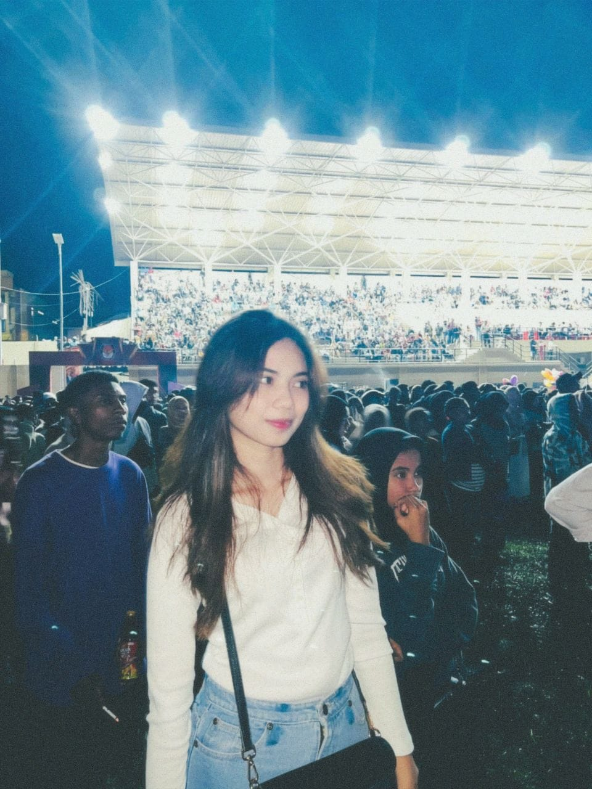

Ini adalah halaman beranda.
| FOTO | ||
|---|---|---|
|  | NAMA | : MICHELLE ANGGRIANY LETSOIN |
| NIM | : 163 23 074 | |
| JURUSAN | : DIII MANAJEMEN INFORMATIKA | |
| KELAS | : 1C | |
| KAMPUS | : POLITEKNIK NEGERI FAKFAK | |
| ASAL SEKOLAH | : SMA N 1 fak-fak | |
| JENIS KELAMIN | : PEREMPUAN | |
| TEMPAT/TANGGAL LAHIR | : FAK-FAK 28 AGUSTUS 2005 | |
| TINGGI BADAN/BERAT BADAN | : 170 CM/54 KG | |
| NAMA AYAH | : ENRICO ROBIC LETSOIN | |
| NAMA IBU | : JURIDIET JULIA PINCA | |
| ALAMAT | :JL.AHMAD YANI | |
| STATUS | : MAHASISWA | |
| NO HP | : 082198800118 | |
| GMAIL | : altsnmichelle@gmail.com |
Ini adalah halaman audio dan video.
Hallo!, perkenalkan nama saya Michelle Anggriany Letsoin. Kalian boleh memanggil saya michelle, saya lahir di fakfak pada tanggal 28 agustus 2005, saya anak ke 4 dari 4 bersaudara, saya lulusan dari Sma Negeri 1 fakfak, dan saat ini saya berkuliah di politeknik negeri fakfak, sekian dari saya terimakasih.
Pada 27 Mei 2024, Masyarakat adat suku Awyu di Boven Digoel,Papua Selatan dan Suku Moi di Sorong, Papua Barat Daya berdemo di depan Mahkama Agung dan menolak pembabatan hutan ini, karena hutan secara turun menurun , serta sumber penghidupan,pangan,budaya, dan sumber air akan hilang jika hutang ini dibangun perkebunan sawit,"
Setelah gerakan All Eyes on Rafah ramai dibagikan oleh masyarakat seluruh dunia, aksi All Eyes on Papua turut menyusul dan diramaikan sejumlah toko.